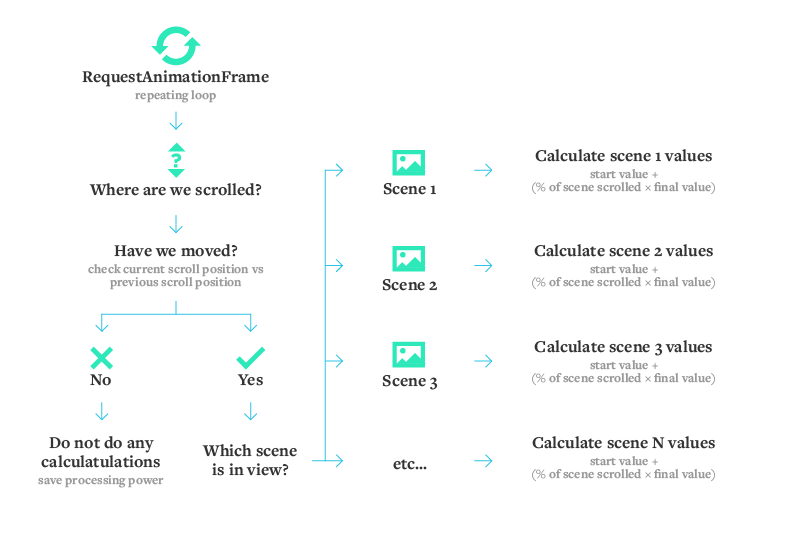
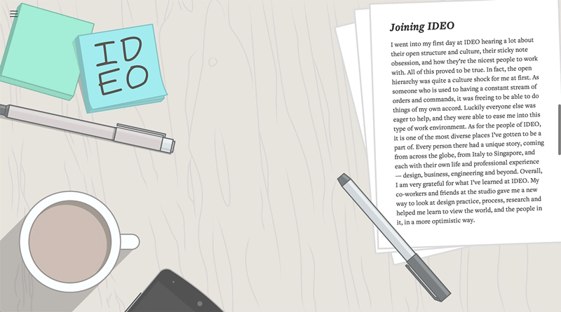
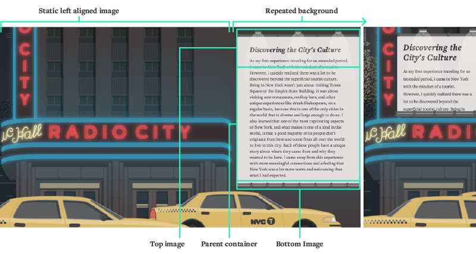

How to make a travel blog that people will actually read
Article originally posted on IDEO Labs.
On May 24, 2014, I arrived in New York City to begin a summer internship at IDEO. It was my first time in the city, and a completely new experience for me—I had never left Canada for an extended amount of time before. Naturally, I wanted to create a memoir of my adventures that I could share with others. My first thought was to create a WordPress or Tumblr blog, but it occurred to me that whenever my friends have posted text-based blogs like these, I never actually read them. I thought to myself: I’m a designer, I’m a developer, and I’m at IDEO. What better time could there be for me to explore a new type of storytelling website? I created an interactive blog about my summer in New York, and in the process, I was able to define a new technology-based storytelling experience.
Before I could begin building the site, I had to pinpoint exactly what I thought was wrong with the standard blog experience. The first problem was the amount of content: Travel blogs usually have long lists of entry upon entry, which is not very approachable, and the posts feel like separate blips in time rather than a cohesive story. My solution to this was to break my experience into five defining chapters and use these to separate the blog into small, digestible sections. I wanted to maintain the feeling and control of a standard blog, but I also remembered how the best classes in grade school were always the ones where the teacher would roll in the TV to show us a video. I decided to take the video experience and adapt it so the user had control of the pacing of content. I wanted each story to flow into the next, yet still feel like a unique moment.
The process of planning code is actually very similar to the design thinking process, and both kick off with research. Once I knew what I wanted to create, I had to “design the code.” This may seem like an odd phrase, but the process of planning code is actually very similar to the design thinking process, and both kick off with research. Coding research tells you what technology is available and what existing solutions you might use for inspiration or appropriate for your own project. I came across this article on parallax scrolling, which convinced me that I wanted to create a one-page scrolling solution. I decided to build it from scratch rather than leverage an existing library in the hopes of cutting down on bloat and increasing performance, with the added bonus that I would learn how the technology works. Then, I sketched out a mental model of how each function would interact with the others. This was a lot like putting a puzzle together by starting with the edges and then filling in the gaps. I mapped out the main functions to create a baseline, then added in functions for smaller tasks. Through a bit of iteration, I came up with the following mental model before beginning to code:
Throughout the process, a recurring theme and challenge was figuring out how to use technology in a way that drove the story forward rather than detracting from it. Several times, I created animations that were technically interesting, but didn’t reflect the story or feeling of the content. It was hard to give up on them after I put all the work into building them, but in the end I had to be honest with myself and come up with different solutions. I also had to keep performance in mind at all times. Chrome Developer Tools, specifically the timeline tool, were key. The timeline tool let me make sure the frame rate stayed above 30fps, so that the animations never appeared choppy, which would break the immersion. When something wasn’t working smoothly, the tool allowed me to hone in on exactly what element or line of code was causing the problem. I am a designer first, and I’m obsessed with being intentional about layout, so my development followed my design. There were, however, a few situations in which my art direction and layout did not happily co-exist with a responsive design. In one of the transitions I created (between “Joining IDEO” and “Feeling Homesick”), a phone moves off of a desk until its screen takes over the viewport. The trickiest part was to position the screen of the phone to be exactly 100% of the viewport height. To do this, I made the image of the phone 125% of the viewport height in the CSS so that 80% of the image height was the phone’s screen (since 100 divided by 125 is .80). From there, I had to scale the phone down on the web page for its beginning state (on the desk), and then scale it for each individual state between the start and the end of the animation, based on the scroll position.
I also had to come up with multiple responsive layouts for various screen sizes and ratios. In the “Discovering the City’s Culture” section, for example, the basic layout has three parts: the billboard that holds the text; the main part of the building and the sign, which are to the left of the billboard; and the repeated background of the building on the right-hand side. The billboard itself is actually comprised of three child elements: the text, the top image of the floodlights, and the bottom image of the rail. This construction allows the billboard to change size and still look like a billboard, and the repeating background fills whatever screen space might remain, so the animation can adapt to even the widest of screens.
If you want to dig deeper into the development process and see a few more tricks, such as how I got the pages on the IDEO desk to scale to the viewport width without losing their proportions, check out the project on GitHub.